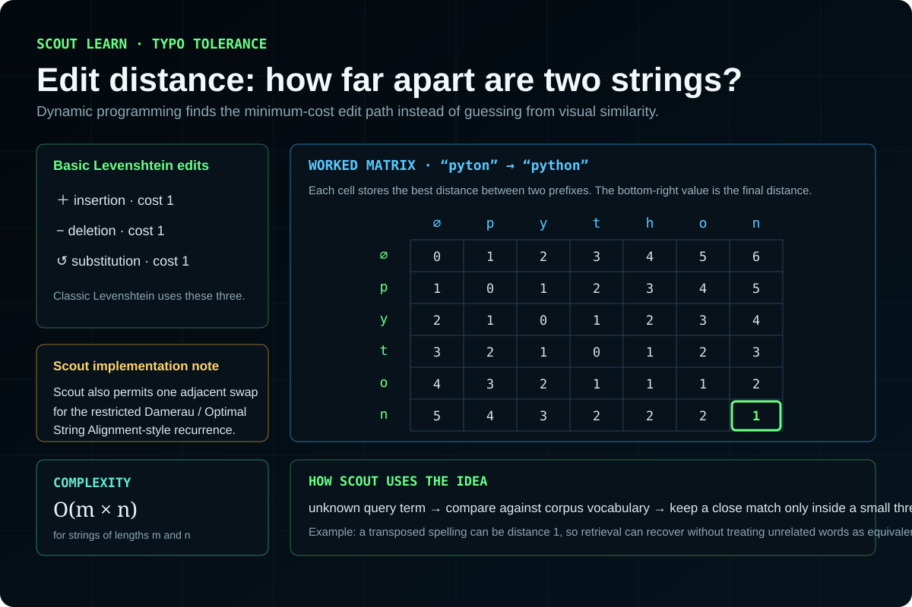
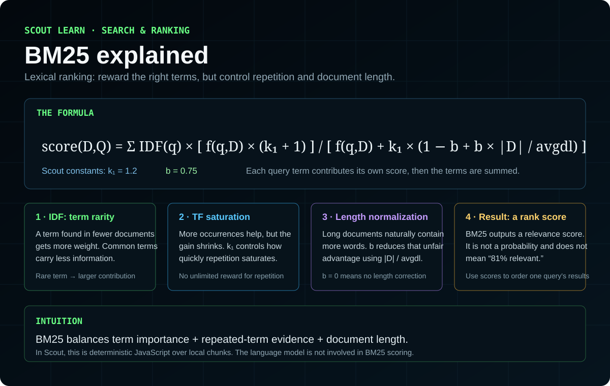
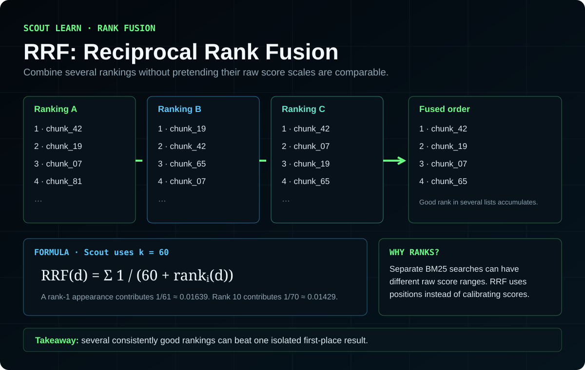
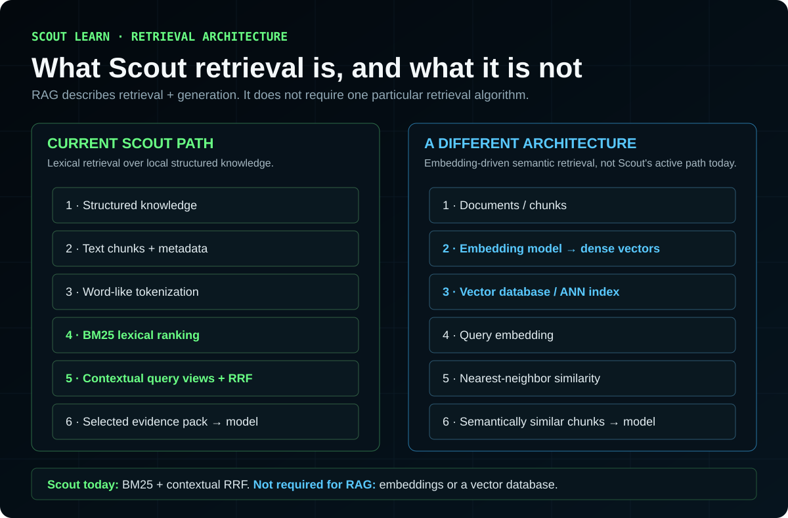
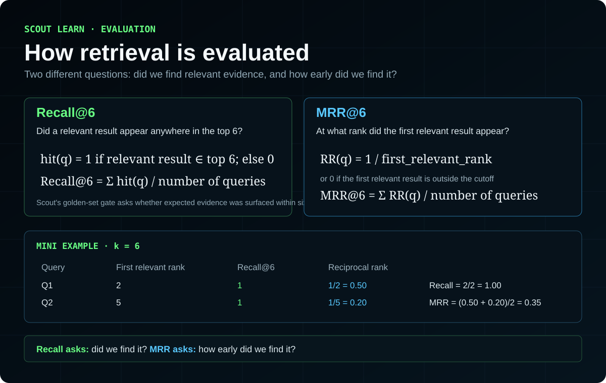
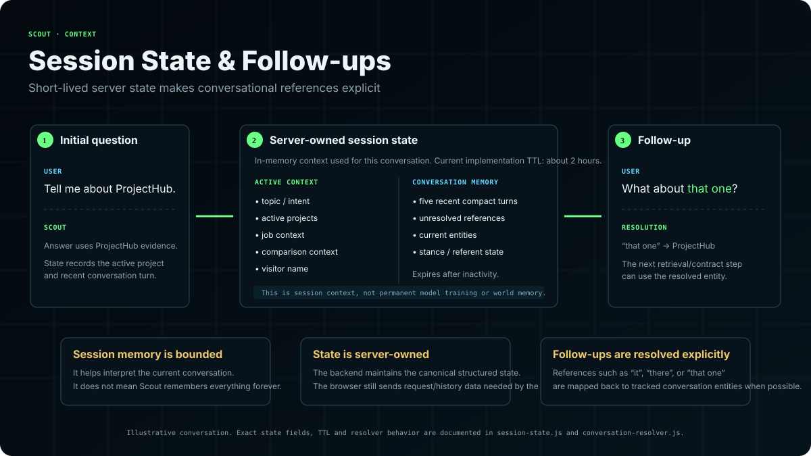
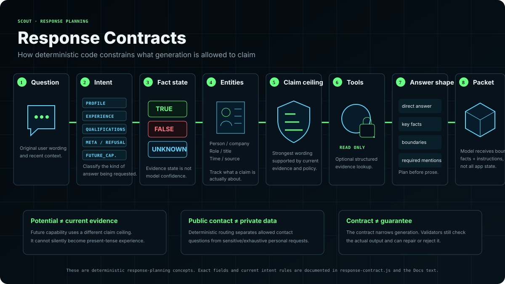
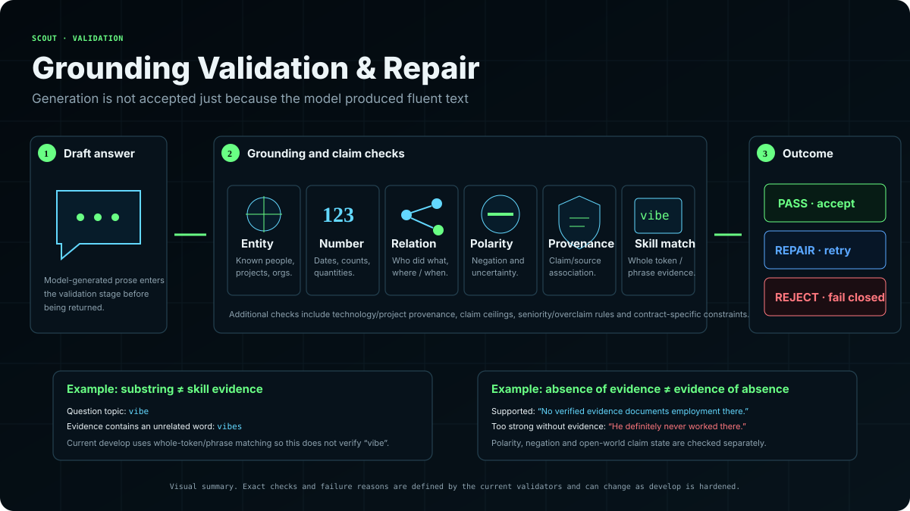

Scout is mostly ordinary software wrapped around one generative step.
A useful way to understand Scout is to stop thinking of it as one giant AI model. The application is a pipeline. JavaScript prepares facts, ranks evidence, tracks conversation state, applies rules, calls a language model for wording, and checks the result afterward.

hash-vector-local label still appears in health metadata, but the current retrieval implementation documented here is BM25/RRF. The search engine does not search the raw JSON directly.
The knowledge file is structured for software, but a lexical search algorithm needs searchable text documents. buildRagChunks() turns the structured records into a small corpus of text chunks. A project becomes a sentence containing its name, description, technologies, and links. Experience becomes a sentence containing role, company, dates, and summary. Skill groups, certifications, FAQ records, rules, blog records, and Scout runtime facts become their own chunks.
Conceptual example
{ name: "ProjectHub", tech: ["JavaScript", "BM25"] }Project ProjectHub: ... Tech: JavaScript, BM25.This is what RAG means here: retrieval selects outside evidence first, then generation receives that evidence. The model does not need to memorize the portfolio.
Before BM25 sees text, Scout simplifies it.
For BM25, the tokenizer lowercases text, replaces non-alphanumeric characters with spaces, splits on whitespace, removes common stopwords, drops one-character tokens, and applies a small suffix stemmer. The stemmer removes endings such as ing, ed, ly, plural s/es, and sometimes a doubled consonant.
"Debugging projects quickly"
After lowercasing, punctuation cleanup, stopword filtering and stemming, terms may reduce to forms such as debug, project, quick.
Reduce surface differences
debug, debugged, and debugging should have a better chance of matching the same evidence without a large NLP dependency.
/[^a-z0-9\s]/g. That is simple and fast, but programming-language names such as C++ or C# lose their punctuation and can become poor lexical tokens. Other Scout layers preserve technology names more carefully, but the BM25 tokenizer itself has this limitation.Build: O(total corpus tokens) The index counts every token once to build per-document term frequencies and global document frequencies.
Edit distance measures how many small edits separate two words.
Scout uses a dynamic-programming edit-distance function for vocabulary-based typo correction. The code calls it Damerau-Levenshtein. More precisely, the recurrence implemented is the adjacent-transposition/restricted variant commonly called Optimal String Alignment distance: insertions, deletions, substitutions, and one adjacent swap each cost 1.

D(i,0) = i
D(0,j) = jcost = 0 if a[i-1] = b[j-1], otherwise 1
D(i,j) = min(
D(i-1,j) + 1, // delete
D(i,j-1) + 1, // insert
D(i-1,j-1) + cost // substitute / match
)
If adjacent characters are transposed:
D(i,j) = min(D(i,j), D(i-2,j-2) + 1)Example: porject → project
o and r are adjacent and swapped.Vocabulary terms come from the current RAG chunks. A protected set prevents absent but legitimate technology names such as COBOL, Rust, Kubernetes, Terraform, and others from being “corrected” into a nearby corpus word.
Per pair: O(m × n) for word lengths m and n. Because an unknown query word can be compared against many vocabulary terms, the rough correction cost is O(V × m × n) per unknown word, where V is vocabulary size. The corpus is small enough that this remains practical.
BM25 ranks documents by term usefulness, not just term count.
BM25 answers a practical question: “Given this query, which chunks contain useful matching terms?” Scout uses Okapi BM25 with k1 = 1.2 and b = 0.75. Three ideas matter: rare terms are more informative, repeated terms help but saturate, and unusually long documents get normalized.

IDF(t) = ln( ((N - df(t) + 0.5) / (df(t) + 0.5)) + 1 )NTotal number of indexed chunks.df(t)Document frequency: how many chunks contain term t at least once.If a term occurs in only 5 of 100 chunks, Scout's formula gives an IDF of about 2.9104. If it occurs in 50 of 100 chunks, IDF falls to about 0.6931. The rarer term contributes much more because it distinguishes documents better.
score(t,D) = IDF(t) ×
f(t,D) × (k1 + 1)
─────────────────────────────────────────────
f(t,D) + k1 × (1 - b + b × |D| / avgdl)
Scout: k1 = 1.2, b = 0.75f(t,D)How many times term t appears in document/chunk D.|D|Number of indexed tokens in the chunk.avgdlAverage chunk length across the corpus.k1, bTuning constants controlling term-frequency saturation and document-length normalization.Worked numeric example using Scout's constants
N=100, the term appears in df=5 chunks, this chunk contains it f=2 times, chunk length is 80, and average length is 100.2.9104.1.4570.2.9104 × 1.4570 = 4.2403.Saturation: if frequency rises from 2 to 4 in the same 80-token document, the factor rises from roughly 1.457 to 1.753, not to 2.914. Saying a term four times is not treated as four times the evidence.
Length normalization: if the same rare term occurs once in a 200-token chunk while average length is 100, the contribution is about 2.0654. A match buried in a very long chunk receives less weight than an equally rare match in a concise chunk.
The final document score is the sum of these contributions for query terms. It is a ranking score, not a probability and not a confidence percentage.
RRF combines rankings without pretending their raw scores are comparable.
Scout can search multiple views of the same question: normalized wording, alias-expanded wording, and conversation-aware rewritten wording. Each BM25 search produces its own ordered list. Reciprocal Rank Fusion combines those lists using only positions.

RRF(d) = Σ 1 / (60 + rankᵢ(d))The constant 60 is the smoothing value used by the implementation. Rank 1 contributes 1/61 ≈ 0.016393; rank 2 contributes 1/62 ≈ 0.016129. A document appearing in several lists accumulates contributions.
Consensus example
[1, 4, 2]. RRF ≈ 1/61 + 1/64 + 1/62 = 0.048147.[2, 1, 5]. RRF ≈ 0.047907.A chunk that is rank 1 in only one list scores about 0.016393. A chunk that is rank 10 in three lists scores about 3/70 = 0.042857. This illustrates the point of fusion: consistent relevance across different query views can outrank a one-view spike.
Scout de-duplicates identical query strings before searching. Unless overridden, candidate depth is max(limit × 3, 12). The fused results are sorted by RRF score, with best individual rank as the tie-breaker.
RRF is not the final evidence order.
The RAG agent backfills needed evidence, applies an intent-specific allowlist where configured, scores the remaining evidence, deduplicates it, preserves pinned facts, and selects the final bounded evidence block. Ranking is one step in that selection process.
boostedScore = evidenceScore × configuredBoost
configuredBoost starts with baseTypeBoost × exactTagIntentBoost
then applies skills-family / certification rules where applicableThis is a hand-tuned heuristic. The multipliers are configuration encoded in JavaScript, not learned weights and not probabilities. After multiplying, evidence is sorted by boostedScore, deduplicated, capped to 8 items by default, and rendered into an evidence budget of 1,100 characters by default.
| Base type | Multiplier | Base type | Multiplier |
|---|---|---|---|
| identity | 1.20 | pitch | 1.20 |
| summary | 1.20 | what-he-does | 1.15 |
| looking-for | 1.10 | target-roles | 1.10 |
| education | 1.15 | experience | 1.15 |
| skills-* family | 1.10 | project | 1.10 |
| faq | 1.05 | story | 1.00 |
| blog | 0.90 | source | 0.85 |
| boundaries | 1.00 | direct-answer | 1.10 |
| scout-runtime | 0.90 | scout-cost | 0.90 |
| contact | 1.00 | unlisted tag | 1.00 |
| gaps | 1.20 | certification | 1.00 before intent rules |
Intent-specific multipliers
| Intent | Additional boosts / reductions encoded today |
|---|---|
| META | scout-runtime 2.0; scout-cost 1.5; contact 1.3; direct-answer 1.5; boundaries 1.2 |
| CONTACT | contact 2.0; identity 1.3; direct-answer 1.5; scout-runtime 0.7 |
| PROFILE | identity 2.2; pitch 2.0; summary 2.0; what-he-does 1.5; looking-for/target-roles 1.2; education/certification 1.4; experience 1.3; faq/source/blog 0.7; scout-runtime 0.6 |
| SKILL | skills 1.5; project 1.3; experience 1.1; direct-answer 1.3; scout-runtime 0.7 |
| JOB_FIT | skills 1.5; project 1.4; pitch/what-he-does/target-roles 1.3; experience 1.2; scout-runtime 0.7 |
| NEGATIVE_ASSESSMENT | boundaries/direct-answer/faq 1.5; gaps 2.4; story/pitch 1.2; scout-runtime 0.6 |
| FUTURE_CAPABILITY | skills 1.4; project 1.3; pitch/what-he-does/target-roles 1.2; scout-runtime 0.7 |
| YES_NO | identity/pitch/skills/project/experience 1.2; scout-runtime 0.8 |
| EXPERIENCE | experience 2.2; certification 1.5; education 1.3; skills 1.0; project 0.7; summary/pitch 1.1; direct-answer 1.5; scout-runtime 0.6 |
| QUALIFICATIONS | certification 2.0; education 1.8; skills 1.5; experience 1.4; summary 1.3; pitch 1.2; direct-answer 1.5; project 1.0; scout-runtime 0.6 |
A ranking example using two eligible PROFILE chunks
0.040 × 1.2 × 2.2 = 0.1056.0.041 × 1.2 × 2.0 = 0.0984.Exact implementation details: PROFILE applies its own allowed-tag set before scoring. Skills-prefixed tags receive the family multiplier; certification receives an additional certification multiplier after the exact-tag boost, so the configured intent value can be applied twice. Pinned backfilled evidence is preserved separately from score order. These rules describe the audited implementation, not a universal retrieval formula.
A question is transformed into several search views before evidence reaches the model.
The current integrated chat path retrieves up to 10 BM25/RRF candidates for the RAG-primary agent. Structured tools can add evidence afterward; they are supplemental rather than replacements for retrieval.

Recall@6 asks “did the right evidence show up?” MRR asks “how high did it rank?”
The offline retrieval evaluator uses a golden set of questions. For each question it searches the BM25 index and checks whether one of the first six results matches an expected tag or keyword.

Recall@6 = number of golden queries with a relevant result in top 6
─────────────────────────────────────────────────────────
total golden queriesIf 38 of 40 queries retrieve something relevant in the first six results, Recall@6 = 38/40 = 0.95.
MRR@6 = (1/n) × Σ reciprocal_rankᵢ
reciprocal_rankᵢ = 1/rank of first relevant result
or 0 if no relevant result appears in top 6Three-query MRR example
1.1/2 = 0.5.0.(1 + 0.5 + 0) / 3 = 0.5.The checked-in evaluator fails CI if Recall@6 is below 0.90. MRR is reported but is not the gate in that script.
Retrieved evidence still has to fit into a small prompt.
The context-packet code deliberately caps evidence and tool observations. It renders only fields needed by the model, removes duplicate rendered items, limits item counts, truncates text, and serializes compact conversation state.
estimated_tokens = ceil(number_of_characters / 4)This is a heuristic, not the model's real tokenizer. Four characters per token is a useful rough estimate for English-like text, but actual tokenization varies by language, punctuation, code, URLs, and model tokenizer.
5 evidence items
Default per-evidence rendering cap is 220 characters for the reasoning packet.
4 evidence items
Default per-item cap is 200 characters; tool observations default to a 400-character cap.
These values are configurable through environment variables. The purpose is engineering, not statistical optimization: smaller packets reduce latency and keep irrelevant text away from a small model.
Current RAG-primary estimator
The current rag-agent.js path does not use only the chars / 4 estimate shown above. It has a second telemetry estimator based on word count plus a regex count of punctuation, symbols, and separators. The current regex also matches spaces, so “punctuationCount” would be an overly neat description of what the code actually counts.
estimatedInputTokens(text)
= ceil( (wordCount × 1.3 + matchedSeparatorSymbolCount × 0.5) × 1.15 )At the same time, prompt construction uses a character budget derived from RAG_MAX_TOKENS × 4. With the default RAG_MAX_TOKENS = 400, the nominal character budget is 1,600 characters, split approximately 90% to the system side and 10% to the user side before additional truncation rules. Default RAG evidence is capped to 8 selected items and 1,100 characters; requested generation defaults to 220 output tokens.
The model writes the prose; it does not choose the evidence corpus.
In the current production configuration, the provider adapter sends messages to Cloudflare Workers AI using @cf/meta/llama-3.1-8b-instruct-fast. Retrieval, state, response contracts, and validation run in Scout's backend process. The provider receives the prepared prompt and returns generated text.
The Cloudflare adapter defaults to temperature 0, top-p 0.9, and clamps requested output to at most 512 tokens. These are sampling/runtime parameters, not proof of factual correctness. Evidence limits and validation reduce unsupported claims; neither guarantees correctness.
@cf/meta/llama-3.1-8b-instruct-fast. RAG/LITE generation calls use temperature 0 and top-p 0.9; max output remains clamped to at most 512 tokens by the provider adapter. Evaluation/browser-local scripts can intentionally use different sampling settings.Scout's current model has no published token-to-neuron rate.
Scout's hosted generation model remains @cf/meta/llama-3.1-8b-instruct-fast. Cloudflare documents that model as active, but its current pricing table does not publish an exact input/output neuron rate for that identifier. Scout therefore does not borrow token-to-neuron rates from a similarly named model.
actualNeurons when it is available. Calculate estimatedNeurons only when the exact model identifier has a verified published rate. If neither exists, neuron usage is unknown / unverified, not zero and not a guessed estimate.Platform allocation and request accounting are different facts
| Cloudflare platform fact | Current value | What it does not prove |
|---|---|---|
| Workers AI included allocation | 10,000 neurons per day | It does not tell us how many current Scout requests fit inside the allocation. |
| Allocation reset | 00:00 UTC | It does not provide Scout's token-to-neuron conversion rate. |
| Workers Paid reference above the included allocation | $0.011 / 1,000 neurons | It is a provider price reference, not proof of Scout's actual spend or current daily neuron usage. |
Actual, estimated, and unknown are different states
| State | Meaning |
|---|---|
actualNeurons | Neuron usage reported by the provider when that field is available. |
estimatedNeurons | A token-derived estimate calculated only when the exact model identifier has a verified published rate. |
| unknown | No provider actual value and no verified exact-model estimate are available. Unknown is not represented as zero. |
Exact model identifiers matter
| Exact identifier | Published neuron rate | Relationship to Scout |
|---|---|---|
@cf/meta/llama-3.1-8b-instruct-fast | Not published on the current Cloudflare pricing table | This is Scout's current hosted generation model. Token-derived neuron consumption is therefore unknown/unverified unless Cloudflare supplies actual neuron usage. |
@cf/meta/llama-3.1-8b-instruct-fp8-fast | 4,119 / M input · 34,868 / M output | A distinct pricing identifier. These rates must not be assigned to Scout's current -fast identifier. |
@cf/meta/llama-3.1-8b-instruct-fp8 | 13,778 / M input · 26,128 / M output | Another distinct model with its own published rates. |
estimated_neurons = (input_tokens / 1,000,000) × published_input_rate(model)
+ (output_tokens / 1,000,000) × published_output_rate(model)Teaching example: @cf/meta/llama-3.1-8b-instruct-fp8-fast only
500 / 1,000,000 × 4,119 = 2.0595 neurons.100 / 1,000,000 × 34,868 = 3.4868 neurons.5.5463 neurons for that exact FP8-fast identifier.floor(10,000 / 5.5463) = 1,803 equal-sized requests is an FP8-fast arithmetic example only. It is not Scout's current requests-per-day capacity.@cf/meta/llama-3.1-8b-instruct-fast, the product page does not claim that a normal Scout request costs about 5.5463 neurons or that Scout supports about 1,803 requests per day.Accounting completeness also matters across several calls. If one billable call has unknown neuron usage, the complete session neuron total remains unknown instead of later becoming a misleading partial total just because a subsequent call has known usage.
Several simple clocks bound the runtime.
| Control | Current code behavior | Meaning |
|---|---|---|
| Request deadline | min(env REQUEST_DEADLINE_MS, 15000) | The chat handler will not allow an end-to-end request deadline above 15 seconds. |
| Generation timeout | Server defaults around 12.5 seconds; provider call also clamps its own timeout. | Generation must leave enough time for retrieval, validation, shaping, and transport. |
| Chat rate limit | 60-second window, default max 20 requests per IP. | A fixed application-level request control, configurable by environment. |
| Response cache TTL | 30 minutes | No-history requests can reuse a recent validated response for the same normalized query. |
| Response cache size | 200 entries | Oldest inserted entry is removed when the map grows beyond the limit. |
| Client packet TTL | 60 seconds | Browser-local evidence packets expire quickly before server validation. |
These are deterministic limits. There is no learned scheduler deciding them. The chat deadline uses an AbortController so outstanding inference can be cancelled when time expires.
Conversation state is structured data, and tools are ordinary functions.
Scout keeps server-owned state such as current topic, named projects, job/company context, active comparison, unresolved references, recent turns, and visitor identity state. This makes references such as “that project” resolvable without asking the language model to infer everything from a long transcript.

The current tool set is allowlisted and read-only:
search_portfolio
Broad evidence search.
get_project
One named project's verified data.
compare_projects
Structured comparison of two to four projects.
match_role
Matches job requirements against verified evidence and gaps.
get_candidate_profile
Returns one allowed profile section.
get_skill_evidence
Finds direct/project/work/certification/adjacent evidence for a technology.
build_recruiter_brief
Assembles a structured recruiter-facing brief.
feat/generic-conversation-sets@cddb3bc is 3 commits ahead and 0 behind develop. Two code commits add server-owned discourse frames and generated clarification; the third is a handoff. The handoff reports a dev-VM deployment of 5bd9437, 12 discourse tests, and an unresolved thin-evidence recovery failure. It awaits review before integration. No Actions run was returned for this branch at audit.Before prose is accepted, Scout represents what kind of claim the answer is allowed to make.
A response contract can carry fields such as intent, sub-intent, policy mode, direct answer, fact state, evidence strength, claim ceiling, requested role/topic, boundaries, and forbidden claims. The important concept is that the system tries to decide the semantic shape of the answer separately from the wording.

| State | Meaning in an open-world evidence system | Example |
|---|---|---|
| TRUE | Scout has evidence supporting the claim. | A project explicitly lists JavaScript. |
| FALSE | Scout has authoritative evidence that the claim is false. | A stored boundary explicitly rules out a senior-level claim. |
| UNKNOWN | Scout lacks enough evidence to confirm or deny it. | No record mentions whether the candidate knows an unrelated technology. |
This is different from a closed-world database assumption. “Not found” does not automatically mean “false.” That distinction is why unknown-skill and future-capability questions need different handling from explicit false-premise questions.
UNKNOWN does not mean “50% likely.” The current system is representing evidence state, not a Bayesian posterior.Validation is a stack of checks, not one “confidence score.”
The grounding validator splits generated text into claims/sentences/clauses and applies multiple deterministic checks. The current code describes checks for overclaim language, entity grounding, number grounding, content-word overlap, question relevance, length/structure, claim upgrades, claim-level support, cross-project provenance, technology relations, negation scope, and relationship consistency.

Did this named thing come from evidence?
Project names, employers, technologies, and other entities are normalized and checked against evidence/entity registries.
Are numeric claims grounded?
A number appearing in the answer should be traceable to the evidence rather than invented by the model.
Are entities connected correctly?
A technology belonging to Project A should not be silently attached to Project B.
Is the answer denying or asserting?
“He did not work at X” must not be treated the same as “He worked at X.” Clause-level negation prevents that category error.
Did the wording upgrade the evidence?
“Used in a project” should not become “expert,” “production owner,” or “senior engineer” without evidence.
Did facts stay attached to their source?
Project-specific roles, technologies, or context are checked against the project they are attributed to.
When primary generated output fails validation, the RAG agent can attempt generative repair or constrained recovery. If reliable generation is unavailable, current code has typed failure paths rather than treating unsupported prose as valid.
Numeric thresholds in the validator
| Check | Current rule | Why it exists |
|---|---|---|
| Content-word overlap | Normally at least 2 unique answer words of length ≥5 must occur in evidence. | A cheap lexical signal that generated prose is talking about supplied facts. |
| Short yes/no / refutation | Can pass with 1 grounded content word in specific cases; invented-entity refutations can be allowed with 0. | Prevents a correct short denial from failing simply because it is concise. |
| Answer too short | Under 15 cleaned characters can trigger too_short; valid pure yes/no responses have a specific exception. | Executable threshold; the older rejection-detail text still says 20. |
| Answer too long | The check compares cleaned text with 800 characters after an 800-character cleaning cap. | Do not interpret the stale “over 600” rejection-detail string as the executable limit. |
| Validation input cleaning | Answer is cleaned/capped at 800 characters; evidence source text at 16,000 characters. | Bounds validator work and input size. |
The browser-local experiment separates evidence preparation from browser inference.
Current integrated server code exposes /api/client-packet, /api/client-validate, and /api/client-status. The server prepares a client-safe compact packet, keeps the full validation evidence server-side for 60 seconds, the browser can generate an answer locally, then the server validates that answer against the same evidence.
runId.runId; the server validates it against stored evidence and forbidden-claim rules.ONNX is a model exchange/runtime format. WebGPU exposes GPU compute capabilities to web applications. q4 generally denotes a four-bit quantized model representation, reducing model memory relative to higher-precision weights. This path is experimental and is not the normal production generation path.
Follow one question through the complete system.
Suppose the visitor asks: “Which project best demonstrates debugging?”
No individual step is especially mysterious. The behavior comes from the composition of small retrieval, state, rule, generation, and validation components.
The current design is optimized for a small local corpus, not internet-scale search.
| Component | Rough complexity | What that means here |
|---|---|---|
| BM25 index build | O(total corpus tokens) | Tokenize documents, count term frequency and document frequency. |
| BM25 query | Approximately O(N × |Q|) in this implementation | The implementation maps across all chunks and checks query terms using frequency-map lookups. Fine for hundreds of chunks; not how a large search engine would index millions of documents. |
| RRF | O(L × D + R log R) | L ranked lists, depth D, then sort R unique fused results. |
| Edit correction | Roughly O(V × m × n) per unknown word | Compare against candidate vocabulary words with a dynamic-programming matrix. |
| Session maps/cache | Mostly expected O(1) map operations | Bounded in-memory state is intentionally simple. |
| LLM generation | Provider/model dependent | Scout does not implement transformer inference mathematics in the backend; it sends a bounded request to the provider. |
If Scout's corpus grew from hundreds of chunks to millions, the current “score every chunk” BM25 search would stop being appropriate. A production search system at that scale would normally use an inverted index or external search engine so query work is proportional to postings for query terms rather than every document.
Do not attribute every Scout behavior to “AI.”
| Behavior | What it actually is |
|---|---|
| BM25 | A deterministic lexical ranking formula from information retrieval. |
| RRF | A deterministic rank-fusion formula. |
| Typo correction | Dynamic-programming edit distance plus hand-maintained/protected vocabulary rules. |
| Intent classification in query-understanding | Ordered regular-expression rules with a default category. |
| Tools | Normal JavaScript functions operating on verified structured data. |
| Response contract | Rule-based semantic planning and evidence-state representation. |
| Grounding checks | String/entity/relationship/negation/provenance validation rules. |
| Language generation | The actual neural language-model component. |
Terms used throughout the Scout site.
- RAG
- Retrieval-Augmented Generation. Retrieve relevant external evidence first, then provide it to a generative model for the answer.
- Corpus
- The collection of searchable documents/chunks. Scout's corpus is built from verified knowledge and runtime facts.
- Chunk
- A small searchable text record derived from structured knowledge, such as one project, experience record, certification, or runtime fact.
- Token
- A unit of text. In Scout's BM25 code, tokens are simple normalized words/stems. In an LLM, tokens are model-specific subword units. Those are not the same tokenizer.
- Stopword
- A common word removed from lexical retrieval because it usually carries little search value, such as “the” or “and.”
- Stemming
- Reducing related word forms toward a common stem, such as
debugging → debug. Scout uses a lightweight hand-written suffix stemmer, not Porter/Snowball. - TF
- Term Frequency. How many times a search term occurs in one document.
- DF
- Document Frequency. How many documents in the corpus contain a term at least once.
- IDF
- Inverse Document Frequency. A weight that makes rare terms count more than terms appearing everywhere.
- BM25
- Best Matching 25 / Okapi BM25. A lexical relevance formula combining IDF, saturated term frequency, and document-length normalization.
k1- BM25 parameter controlling term-frequency saturation. Scout uses 1.2.
b- BM25 parameter controlling document-length normalization. Scout uses 0.75.
- RRF
- Reciprocal Rank Fusion. Combines multiple ranked lists using reciprocal rank rather than their incompatible raw scores.
- Candidate depth
- How many results each individual search contributes before rank fusion. Scout defaults to at least 12 or three times the requested final limit.
- Edit distance
- The minimum number of allowed character edits required to transform one string into another.
- Optimal String Alignment distance
- The restricted adjacent-transposition edit-distance variant implemented by Scout's typo code, although the function is named Damerau-Levenshtein.
- Anaphora
- A reference such as “it,” “that project,” or “the first one” whose meaning depends on prior conversation.
- Intent
- A category describing what the user is trying to do, such as factual lookup, role fit, contact, weakness assessment, or small talk.
- Evidence
- Retrieved or tool-returned data that is allowed to support factual claims in the answer.
- Response contract
- A structured semantic plan describing the allowed answer state, evidence boundary, requested topic/role, and forbidden claims before or around generation.
- Open-world assumption
- Missing evidence does not automatically make a claim false. It can remain UNKNOWN unless authoritative negative evidence exists.
- Grounding
- Connecting generated factual claims to supplied evidence rather than allowing unsupported invention.
- Provenance
- Where a fact came from and which entity/project it belongs to.
- Inference
- Running a trained model to produce output. In Scout production, hosted Workers AI performs normal generative inference.
- Provider
- The runtime service or adapter that actually executes model inference, such as Cloudflare Workers AI or a local Ollama path.
- Context / context packet
- The bounded instructions, state, evidence, and tool observations supplied to the language model for one turn.
- Temperature
- A language-model sampling parameter that rescales logits before token sampling. Lower generally means a sharper, less variable distribution.
- Top-p
- Nucleus sampling parameter. Sampling is limited to the smallest high-probability set of tokens whose cumulative probability reaches the chosen threshold.
- Neuron
- Cloudflare Workers AI's usage-accounting unit. Scout preserves provider-reported actual neurons when available and only computes token-derived estimates when the exact model identifier has a verified rate. Unknown exact-model usage remains unknown rather than becoming zero.
- TTL
- Time To Live. How long cached or temporary data remains valid before expiring.
- Rate limit
- A cap on how many requests a client may make during a time window.
- Liveness
- A health check answering “is the process alive?”
- Readiness
- A health check answering “is the service initialized enough to receive real traffic?”
- Golden set
- A fixed set of test questions with expected retrieval/behavior used to measure regressions.
- Recall@k
- Fraction of test queries for which a relevant result appears somewhere in the first
kresults. - MRR@k
- Mean Reciprocal Rank. Average of
1/rankfor the first relevant result, with zero for misses inside the cutoff. - Regression test
- A test retained because a behavior broke before or is important enough that future changes must not silently break it.
- Fail closed
- When a required safety/correctness condition fails, return an error or constrained result instead of pretending success.
- WebGPU
- Browser API exposing modern GPU rendering/compute capabilities. Scout has an experimental browser-local inference path that can use it.
- ONNX
- An open format/ecosystem for representing and running machine-learning models across runtimes.
- Quantization / q4
- Representing model weights at lower numeric precision to reduce memory and compute. “q4” generally denotes a four-bit quantized representation; exact packing/quantization scheme depends on the model/runtime artifact.
- Embedding
- A numeric vector representation of data, often produced by a neural model so semantically related items have nearby vectors. Scout’s active BM25/RRF retrieval path does not require embeddings.
- Vector search
- Retrieval by comparing numeric vectors with a similarity or distance function such as cosine similarity, dot product, or Euclidean distance. This is different from Scout’s current lexical BM25 ranking.
- Vector database
- A database/index specialized for storing vectors and retrieving nearest neighbors. A RAG system may use one, but RAG does not require one and Scout’s current retrieval path does not depend on one.
- Semantic search
- Search intended to match meaning rather than only exact words. Embedding-based vector retrieval is one approach. Scout instead improves lexical retrieval with normalization, aliases, context rewriting, BM25, RRF, and deterministic re-ranking.
- Deterministic
- Given the same inputs and configuration, ordinary code follows the same defined rules and calculations. BM25, RRF, tool functions, contracts, and most validators are deterministic.
- Generative
- Produces new output rather than only selecting stored values. In Scout, the language-model call is the main generative component.
- Heuristic
- A practical rule chosen by engineering judgment rather than learned from data or derived as an optimal theorem. Scout’s evidence multipliers and several validator thresholds are heuristics.
- Re-ranking
- Taking an already ranked candidate list and applying another scoring/ordering stage before final selection. Scout re-ranks retrieval evidence with type and intent multipliers.
- Multiplier / boost
- A numeric factor multiplied into a score. A factor above 1 increases relative priority; below 1 decreases it. It does not make the score a probability.
- Logit
- A model’s raw pre-softmax score for a possible next token. Sampling parameters such as temperature operate on logits/probabilities inside the model runtime, not in Scout’s BM25 code.
data/scout-runtime-knowledge.json is still marked lastVerified: 2026-08-21 and retains the superseded sentence assigning 4,119 / 34,868 to Scout's normal -fast model. This site treats that sentence as stale and follows executable provider/accounting code instead.
Reference library.
Implementation claims on this site are sourced to ProjectHub. The references below are independent material for the algorithms, evaluation methods, standards and provider behavior used in the teaching guide.
Lewis et al. (2020) · paper
Foundational RAG paper. Its retriever is dense, unlike Scout’s current lexical retriever, but it establishes the retrieve-then-generate pattern.
source ↗IBM Technology · watch
Short conceptual overview of retrieval plus generation and why external evidence is useful.
source ↗Manning, Raghavan & Schütze · book
Free Stanford/Cambridge text covering term vocabularies, tolerant retrieval, weighting, probabilistic IR and evaluation.
source ↗Wagner & Fischer (1974) · paper
Classic dynamic-programming formulation for insertion, deletion and substitution edit distance.
source ↗van der Loo (2014) · paper
Peer-reviewed explanation of Optimal String Alignment as restricted Damerau-Levenshtein and how it differs from the full Damerau-Levenshtein metric.
source ↗Zhao & Sahni (2019) · paper
Peer-reviewed treatment of full Damerau-Levenshtein distance with transposition.
source ↗Back To Back SWE · watch
Step-by-step dynamic-programming explanation aimed at programmers.
source ↗Robertson & Zaragoza (2009) · paper
Canonical detailed treatment of the probabilistic relevance framework and BM25.
source ↗Abhishek Thakur · watch
Applied explanation of term frequency, IDF, document length, k1 and b.
source ↗Cormack, Clarke & Büttcher (2009) · paper
Original SIGIR paper introducing/evaluating RRF as a simple rank-fusion method.
source ↗Abhishek Thakur · watch
Short practical explanation of the reciprocal-rank formula and fusion behavior.
source ↗Manning, Raghavan & Schütze · book
Academic reference for ranked-retrieval evaluation and the limits of finite test collections.
source ↗Voorhees & Tice (2000) · paper
Historical primary source using mean reciprocal rank for ranked answer evaluation.
source ↗Computing For All · watch
Direct worked explanation of reciprocal rank and MRR.
source ↗Vaswani et al. (2017) · paper
Foundational Transformer paper. Scout does not implement this math itself; the model provider does inference.
source ↗Holtzman et al. (2019) · paper
Introduces nucleus/top-p sampling and explains why decoding strategy changes generated text.
source ↗Umar Jamil · watch
Long-form visual walkthrough of Transformer math and inference.
source ↗Cloudflare · official
Current provider pricing and neuron allocation. Recheck this page because provider rates can change independently of Scout.
source ↗Cloudflare · official
Official model identifier, API parameters and context information for the production model path.
source ↗W3C GPU for the Web WG · standard
Normative browser API reference for GPU rendering and compute.
source ↗ONNX · official
Official explanation of ONNX as a model representation/interchange format.
source ↗